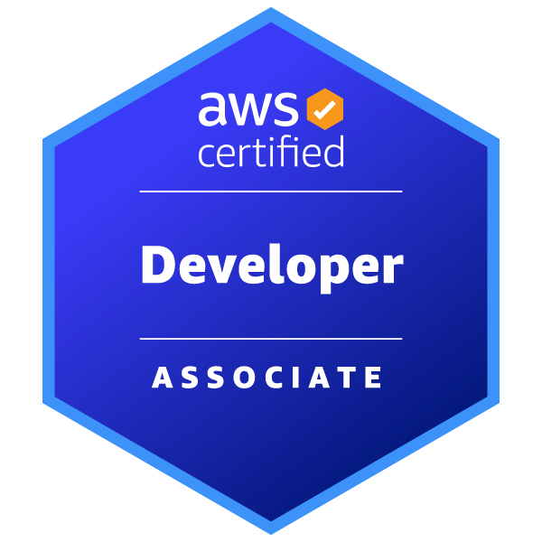

ABOUT ME
I'm Harrison Holt
I am a software engineer specializing in cloud-native backend architecture, automated infrastructure deployment, and artificial intelligence. Most recently, I served as a Jr. Software Developer Intern at Eigennet LLC, where I optimized large-scale AI pipelines, built automated cloud storage integrations, and resolved production infrastructure constraints using Python, AWS SageMaker, and EC2. My focus is on engineering scalable, production-ready systems that bridge advanced AI capabilities with robust data persistence.
I hold a B.S. in Computer Science with a minor in Psychology from Clemson University. Currently, I am pursuing my M.S. in Computer Science online through the Georgia Institute of Technology, focusing on a systems-driven path encompassing graduate algorithms, advanced operating systems, and cloud computing infrastructure. Because my graduate program is fully remote and part-time, I am completely available for standard daytime engineering roles.
I’m certified in AWS (Solutions Architect, Developer, and AI Practitioner) and digital accessibility (DHS Trusted Tester). These credentials allow me to design cloud environments and application architectures that are scalable, secure, compliant, and usable by everyone.
Whether I'm writing declarative Infrastructure as Code (IaC) via Terraform, optimizing distributed application databases, or running automated digital accessibility compliance audits inside a CI/CD deployment pipeline, I take pride in delivering robust backend ecosystems with real-world enterprise reliability.
This site was built with accessibility in mind and meets WCAG 2.1 AA standards, verified using Pa11y, Axe, Lighthouse, and WAVE, and tested with ANDI following DHS Trusted Tester methodology.
Outside of dev work, I'm passionate about military history and will never say no to a good book and a Dr Pepper.
View Accessibility ReportWHAT I DO
SPECIALIZING IN
Cloud & DevOps Engineering
Provisioning production-grade serverless environments natively using Terraform and CloudFormation. Structuring secure, multi-tier VPC networks, IAM governance, and automated GitHub Actions CI/CD pipelines.
AI & Systems Automation
Integrating managed AI foundation models programmatically using Amazon Bedrock and Python. Optimizing distributed vLLM processing pipelines and resource allocations on Amazon SageMaker and EC2 infrastructure.
Systems & Software Engineering
Developing optimized backend software using rigorous data structures, performance diagnostics, and low-level resource management. Architecting distributed processes and relational databases with a focus on system availability and compliance.
PORTFOLIO
FEATURED PROJECTS
The Good Driver Program
A full-stack web application designed to reward safe driving behavior. Built by a 5-member Agile team using React, Node.js, AWS Lambda, API Gateway, RDS (MySQL), and Cognito. Served as Scrum Master and contributed to both frontend and backend development, emphasizing accessibility and scalability.
View Details
ChatterBox
A full-stack team communication platform built with the MERN stack. Implements secure JWT authentication, protected API routes, and channel-based messaging architecture. Features include public channel creation, member-based access control, and persistent message storage using MongoDB. Designed to simulate a production-grade collaboration SaaS system.
View DetailsSEMESTER IN REVIEW
CURRENT GRADUATE STUDIES
Algorithms & Complexity
Analyzing core design models to determine upper and lower time/space bounds. Evaluating time-space trade-offs, inherent problem difficulties, and discrete mathematical structures.
AI-Receptive Engineering
Leveraging modern software patterns for strategic AI tool integration to boost development throughput. Emphasizing build automation, version control, and human-centered system design.
Systems Specialization
- Spring '27: CS 6200 & CS 6250
- Summer '27: CS 6422
- Fall '27: CS 6210 & CS 6238
- Spring '28: CS 6211
- Summer '28: CS 6340
- Fall '28: CS 6515
CERTIFICATIONS
Industry-recognized certifications demonstrating cloud expertise and accessibility knowledge.
Full Stack Development Certificate
28-week program covering the MERN stack, TypeScript, Next.js, SQL/NoSQL, and AWS deployment. Completed 32 hands-on projects, including a capstone MERN app, gaining experience in responsive design, API integration, authentication, testing, and database design.
View Certificate
AWS Solutions Architect
Validates my ability to design secure, scalable AWS solutions using real-world architectural best practices. I’ve applied these skills to build resilient, cloud-native systems in hands-on projects.
View Certificate
AWS Developer
Demonstrates my ability to build, deploy, and debug cloud-native apps using AWS services, SDKs, and CI/CD pipelines. I’ve used these skills to create secure, serverless applications with real-time monitoring and automation.
View CertificateDHS Trusted Tester
Demonstrates hands-on ability to evaluate web content for Section 508 compliance using code inspection. This certifies I can conduct manual accessibility audits beyond automated tools, ensuring compatibility with assistive technologies.
View Certificate